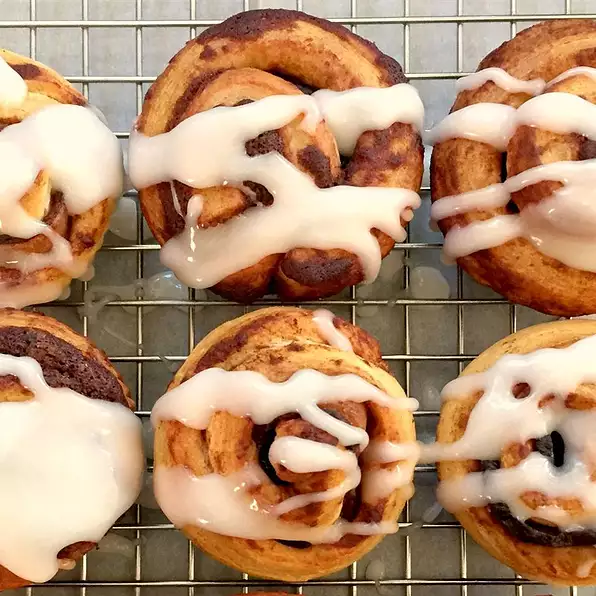

Bacon Wrapped Cinnamon Roll Bites

Description:
Simply add bacon to your Cinnamon Rolls for a sweet and savory treat!
Ingredients:
- 1 (12.4 ounce) package refrigerated cinnamon roll dough with icing
- 1 (12 ounce) package bacon
Instructions:
- Line a baking sheet with aluminum foil and place a rack on top. Arrange bacon on the rack and place in a cold oven.
- Heat oven to 350 degrees F (175 degrees C). Cook bacon while oven heats until slightly cooked but not crisp, 5 to 10 minutes.
Blot excess grease with paper towels.
- Grease 16 muffin cups or line with paper liners.
- Unroll cinnamon roll dough into a flat sheet on a work surface. Cut strips in half widthwise.
Place a piece of bacon on each dough strip and roll dough to enclose the bacon. Place rolls in the prepared muffin cups.
- Bake in the preheated oven until rolls are golden brown, 13 to 17 minutes. Cool slightly.
- Top cinnamon roll bites with icing from package.